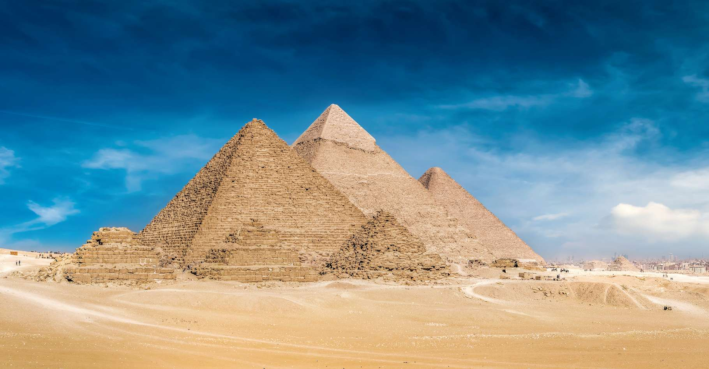

A la découverte des pyramides de Gizeh!
Contexte historique
Situé à treize kilomètres du centre-ville du Caire, le Plateau de Gizeh renferme l'une des plus célèbres nécropoles du monde. De grands pharaons y ont établi leurs demeures éternelles, à l'intérieur des légendaires pyramides de Khéops, de Khéphren et de Mykerinos. Ces mystérieux monuments sont gardés par l'imperturbable Grand Sphinx, protecteur des lieux et héritage immuable du glorieux passé de l'Égypte.
Histoire
À l'époque des pharaons, le repos éternel était au cœur des croyances des Égyptiens. Pour eux, les rites accomplis envers les dieux et les défunts rois servaient à maintenir l'ordre cosmique de l'univers.
La légende raconte qu'il y a près de 3 000 ans avant notre ère, le roi Snéfrou aurait inculqué cette culture à son jeune fils Khéops, et ce, dès son plus jeune âge. Il lui a ainsi transmis d'importantes valeurs liées au cycle de la vie, au voyage dans l'au-delà et le passage entre les deux. À l'aube de son règne, le jeune monarque fit alors construire un sépulcre, porte vers le royaume invisible, à la hauteur de sa suprématie.
Les travaux ont ainsi nécessité près d'une vingtaine d'années de durs labeurs pour permettre à plus de 20 000 hommes, esclaves, prisonniers de guerre, soldats et paysans, de bâtir la Première Merveille du monde antique, la Grande Pyramide de Gizeh. Un temple funéraire avait été bâti près du monument. Il s'agissait d'un local où les prêtres rendaient un culte au grand roi. Plus bas, ils avaient aussi construit un second sanctuaire, près du Nil. C'est là que les serviteurs apportaient les offrandes qui devaient servir de provisions au défunt.
À la mort du roi, son fils Djédefrê fit ériger un monument représentant la force et l'intelligence de son défunt père, le Sphinx de Gizeh. Après avoir hérité du trône, son frère Khéphren fit bâtir à son tour une pyramide. Bien qu'elle fût plus petite que celle de son père, il demanda aux architectes d'en élargir les angles pour donner l'illusion d'être plus grande que la pyramide de Khéops.
Après lui vint Mykérinos. Comme ses prédécesseurs, il fit bâtir une grande pyramide sans toutefois accorder trop d'importance à sa taille. Il fit aménager un intérieur assez singulier, mais ne pu achever son œuvre. Son fils Shepseskaf mena les travaux à leurs termes.
Selon de nombreux passionnés d'astronomie et d'Égypte antiques, les pharaons Khéops, Képhren et Mykérinos auraient construit leurs pyramides en suivant l'agencement de la ceinture d'Orion.
Aujourd'hui, le complexe de Gizeh est l'un des sites touristiques les plus populaires au monde. En reconnaissance de leur importance pour l'histoire, elles ont été inscrites au patrimoine mondial de l'UNESCO en 1979.
Les pyramides: monuments phares du plateau de Gizeh
Le Pyramide de Khéops
La pyramide de Khéops ou grande pyramide de Gizeh est un monument construit par les Égyptiens de l'Antiquité, formant une pyramide à base carrée. Tombeau présumé du pharaon Khéops, elle fut édifiée il y a plus de 4 500 ans, sous la IVe dynastie1, au centre du complexe funéraire de Khéops se situant à Gizeh en Égypte. Elle est la plus grande des pyramides de Gizeh.
Elle était considérée dans l'Antiquité comme la première des Sept Merveilles du monde. Seule des Sept Merveilles du monde à avoir survécu jusqu'à nos jours, elle est également la plus ancienne. Durant des millénaires, elle fut la construction humaine de tous les records : la plus haute, la plus volumineuse et la plus massive.
Le tombeau, chef-d'œuvre de l'Ancien Empire de l'architecte Hémiounou, est la consécration et l'aboutissement de toutes les techniques architecturales mises au point depuis la création de l'architecture monumentale en pierre de taille par Imhotep pour la pyramide de son souverain Djéser, à Saqqarah. Les nombreuses particularités architectoniques et les exploits atteints pour sa construction en font une pyramide à part qui ne cesse de questionner la recherche
Le Pyramide de Khéphren
La pyramide de Khéphren est la deuxième pyramide d'Égypte en taille. Dominant un complexe composé de deux temples reliés par une chaussée et d'une pyramide satellite, elle est de type à faces lisses et fut élevée sous la IVe dynastie durant l'Ancien Empire pour le pharaon Khéphren, fils de Khéops. Elle se dresse sur le plateau de Gizeh au sud-ouest de celle de son père. Elle est sans doute la plus facile à reconnaître car son sommet est encore couvert de calcaire. Légèrement plus petite que celle de Khéops, elle paraît pourtant plus haute car érigée sur une proéminence rocheuse avec un angle d'inclinaison supérieur celui de la Grande pyramide. Le temps a également préservé un temple d'accueil dont la sobriété et la composition subtile des matériaux font un véritable joyau de l'Ancien Empire.
Le Pyramide de Mykérinos
La pyramide de Mykérinos est la plus petite des trois grandes pyramides du plateau de Gizeh. Elle s'élève à la hauteur de 63 mètres à l'extrémité Sud du plateau, ne représentant qu'un dixième du volume de la plus grande, la pyramide de Khéops. Dominant un complexe composé de deux temples reliés par une chaussée et de trois pyramides satellites, elle est de type à faces lisses et fut élevée sous la IVe dynastie durant l'Ancien Empire pour le pharaon Mykérinos. De nombreux signes d'inachèvement montrent que la mort du souverain intervint au cours de l'édification du monument.

Les Pyramides des reines
Au sud de la pyramide de Mykérinos, on trouve trois petites pyramides: les pyramides des reines. Elles étaient enterrées dans des chambres funéraires plus modestes que celles des pharaons, mais elles avaient malgré tout droit à une place à leurs côtés.
Ces trois pyramides sont plus petites que celles qui se trouvent à côté de la pyramide de Khéops. Elles sont alignées le long de la muraille sud de la grande pyramide. Elles datent environ du troisième millénaire avant JC. Il s'agissait sans doute dse épouses de Mykerinos. Seule l'une d'entre elle est une véritable pyramide, on pense que les autres étaient des lieux d'offrandes et de culte, même si elles contiennent aussi des tombes.
Les trois pyramides sont entourées par la même muraille.
Globalement, il faut noter que chaque pyramide n'est que l'élément central d'un complexe funéraire très complexe. Celui de Khéops consiste en une voie d'accès, un temple haut et un bas, dit "de la vallée", la pyramide, mais aussi deux cimetières contenant les tombes des personnalités ayant entouré le pharaon lors de sa vie. Plus la tombe est imposante, plus elle est proche de la pyramide, plus le lien qui unissait le défunt et le pharaon était étroit.
Or près de la pyramide de Khéops vous verrez, outre les 3 pyramides dites "des reines" une série de mastabas qui peuvent se visiter, bien que leurs intérieurs soient simples.
Il est important de savoir que le plateau de Gizeh n'a pas que les pyramides comme attractions et qu'on peut y faire d'autres activités comme la traversée du Nil à bord de la Flâneuse du nil, du luxueux Oberoi Zahra et beaucoup d'autres types d'embarcations.Il est également de coutume de visiter Le Sphinx qui est une statue monumentale d'un lion avec une tête humaine ainsi que son temple que l'on appelle le Temple du Sphinx qui est un temple consacré au Dieu Rê, le fameux Dieu Soleil des égyptiens.